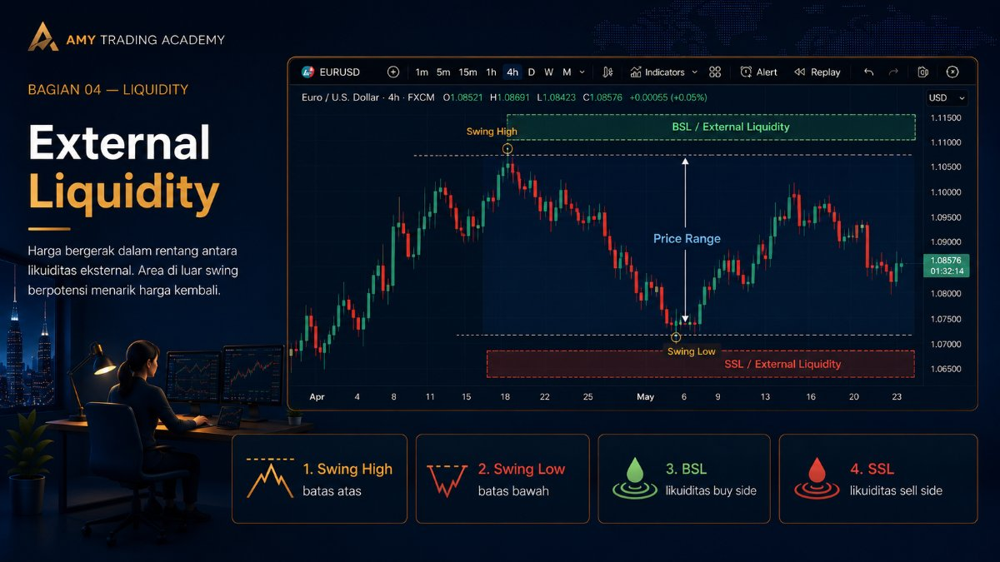
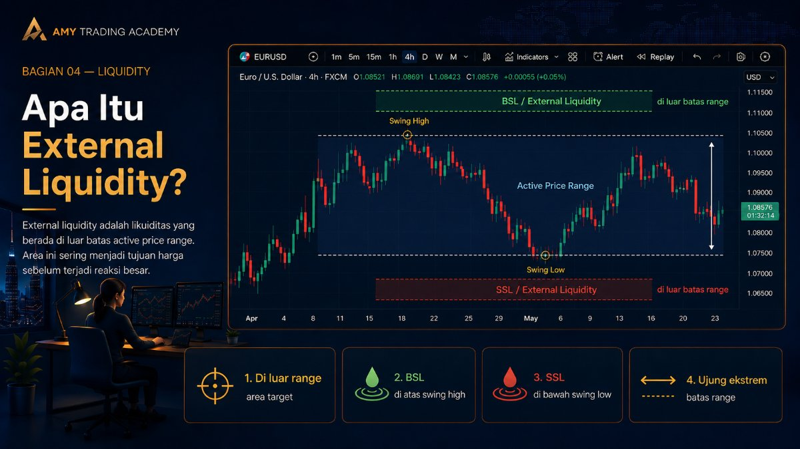
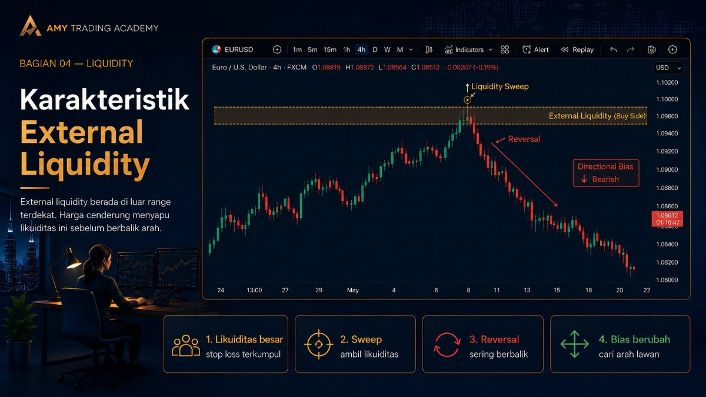
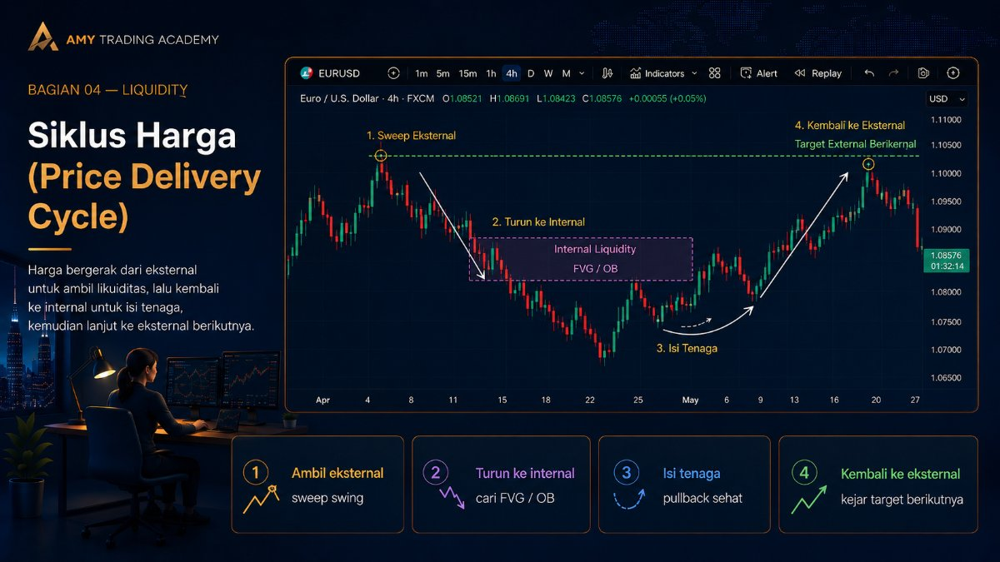
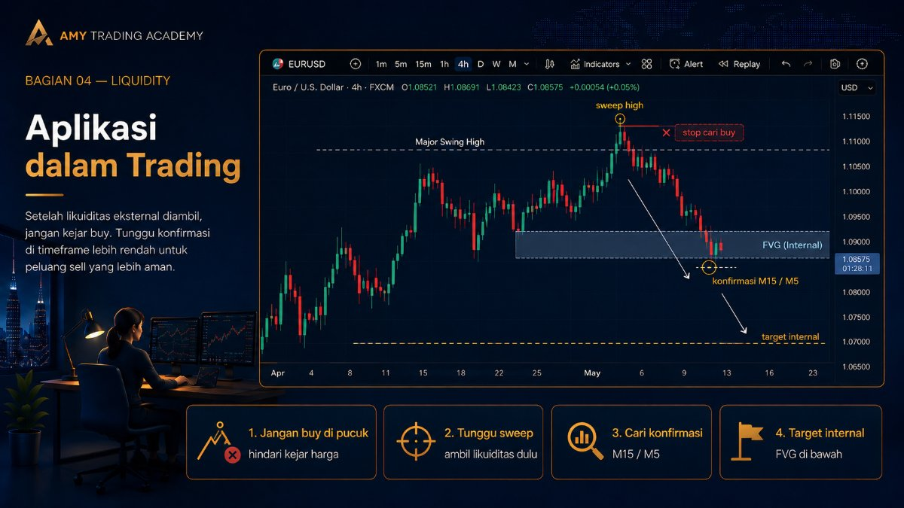

External Liquidity

Dalam metode SMC/ICT, pergerakan harga bukanlah sesuatu yang bergerak bebas tanpa tujuan. Harga selalu bergerak seperti pendulum yang berayun dari satu titik ekstrem ke titik ekstrem lainnya, dan mampir ke titik tengah untuk mengisi tenaga. Untuk membaca arah ayunan pendulum ini, kita membagi likuiditas ke dalam dua ruang lingkup spasial: External Liquidity (likuiditas luar) dan Internal Liquidity (likuiditas dalam).
Di bab ini, kita akan fokus pada bagian luarnya terlebih dahulu: External Range Liquidity (ERL). Bayangkan ini sebagai tembok benteng terluar dari sebuah kastil. Ini adalah batas maksimal dari pergerakan harga pada suatu rentang waktu tertentu.
Apa Itu External Liquidity?

External Liquidity adalah liquidity pool yang berada tepat di luar batas atas dan batas bawah dari sebuah Price Range (rentang harga) yang sedang aktif. Secara sederhana, ini adalah Buy Side Liquidity (BSL) yang bersemayam di atas Swing High utama, dan Sell Side Liquidity (SSL) yang bersemayam di bawah Swing Low utama.
Mengapa disebut "Eksternal"? Karena posisinya berada di ujung ekstrem pergerakan harga. Jika harga saat ini sedang bergerak naik turun di antara level 1000 (Low) dan 1100 (High), maka likuiditas yang ada di atas 1100 dan di bawah 1000 itulah yang disebut sebagai External Liquidity.
Karakteristik External Liquidity

Kolam likuiditas eksternal ini biasanya sangat besar, karena ia tidak hanya mengumpulkan Stop Loss dari day trader (trader harian), tetapi juga mengumpulkan posisi dari swing trader dan investor institusional yang menahan posisi dalam jangka waktu lama.
Oleh karena itu, ketika harga berhasil mencapai External Liquidity, dua hal penting biasanya terjadi:
- Reaksi Penolakan (Reversal): Karena banyaknya pesanan yang terkumpul di sana, algoritma sering kali mengambil likuiditas tersebut (Liquidity Sweep) lalu berbalik arah secara dramatis.
- Perubahan Bias (Directional Bias): Setelah harga berhasil menyapu External Liquidity di salah satu sisi (misalnya sisi atas), tugas algoritma di area ekstrem tersebut selesai. Harga tidak lagi punya alasan untuk terus naik, sehingga ia akan mulai mencari target di arah yang berlawanan (ke bawah).
Siklus Harga (Price Delivery Cycle)

Ini adalah rahasia terbesar dalam membaca algoritma harga (IPDA). Algoritma pengiriman harga bekerja dalam sebuah siklus yang berulang tanpa henti:
Dari Eksternal menuju Internal, lalu dari Internal kembali ke Eksternal.
Artinya:
-
Ketika harga menembus Swing High (mengambil External Liquidity), harga akan turun (pullback) mencari area ketidakseimbangan (seperti FVG atau Order Block) yang ada di dalam rentang harga tersebut (ini yang disebut Internal Liquidity).
-
Setelah harga menyentuh area Internal tersebut, ia akan mendapat energi baru, lalu memantul kembali ke luar untuk mengejar External Liquidity berikutnya (mencetak Swing High baru atau mengejar Swing Low di seberang).
Cara Menentukan External Range
Untuk bisa memanfaatkan konsep ini, kamu harus tahu cara menentukan batasan areanya (range). Berikut langkah praktisnya:
- Pilih Time Frame yang jelas (misalnya H4 atau Daily).
- Cari titik Swing High (titik tertinggi yang diapit oleh dua puncak yang lebih rendah) dan titik Swing Low (titik terendah yang diapit oleh dua lembah yang lebih tinggi) yang paling jelas dan belum tertembus.
- Garis horizontal di Swing High tersebut adalah batas atas External Liquidity (BSL).
- Garis horizontal di Swing Low tersebut adalah batas bawah External Liquidity (SSL).
- Selama harga bergerak di antara dua garis tersebut, harga sedang berada di dalam fase Internal Range.
Aplikasi dalam Trading

Pemahaman tentang External Liquidity akan menyelamatkanmu dari kebiasaan "Membeli di pucuk". Jika kamu menyadari bahwa harga baru saja menembus Swing High H4 (berarti baru saja mengambil External Liquidity), kamu seharusnya berhenti mencari posisi Buy. Mengapa? Karena siklusnya mengatakan, setelah eksternal diambil, harga akan bergerak ke internal (turun/pullback).
Sebaliknya, pada momen itulah kamu mulai mencari konfirmasi pelemahan arah di Time Frame kecil (seperti M15 atau M5) untuk melakukan entry Sell, dengan target area Internal (FVG) yang ada di bawahnya.
Memahami batasan ekstrem ini (External) adalah syarat wajib sebelum kita membedah apa yang terjadi di bagian dalam (Internal), yang akan kita bahas di bab selanjutnya.